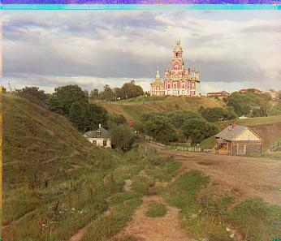
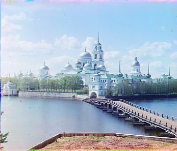
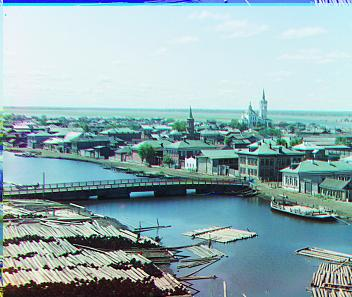
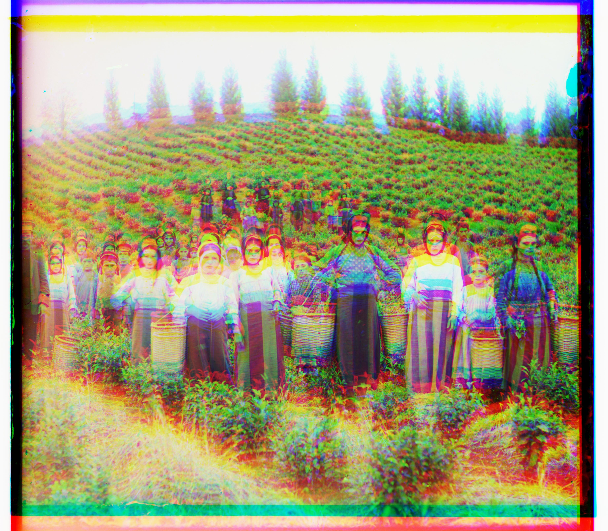
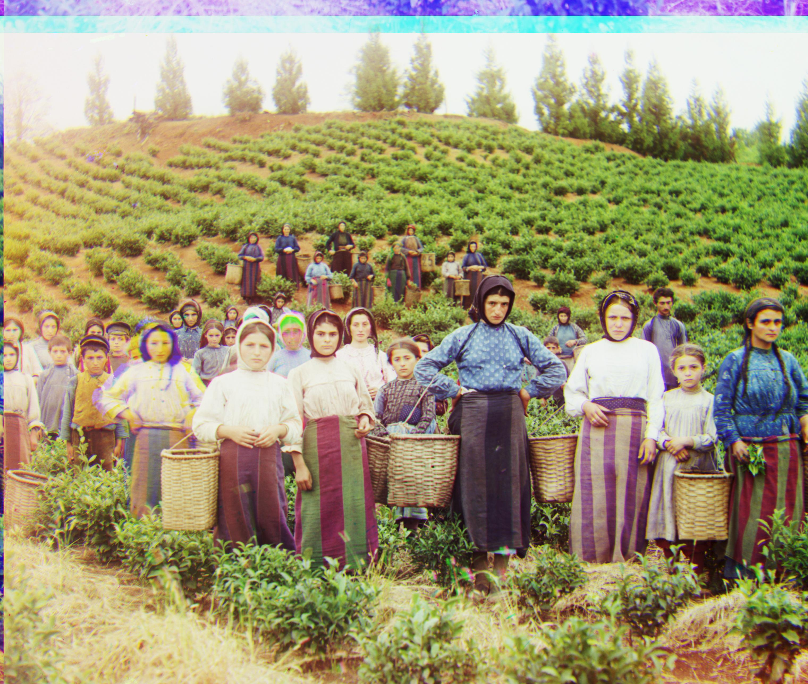
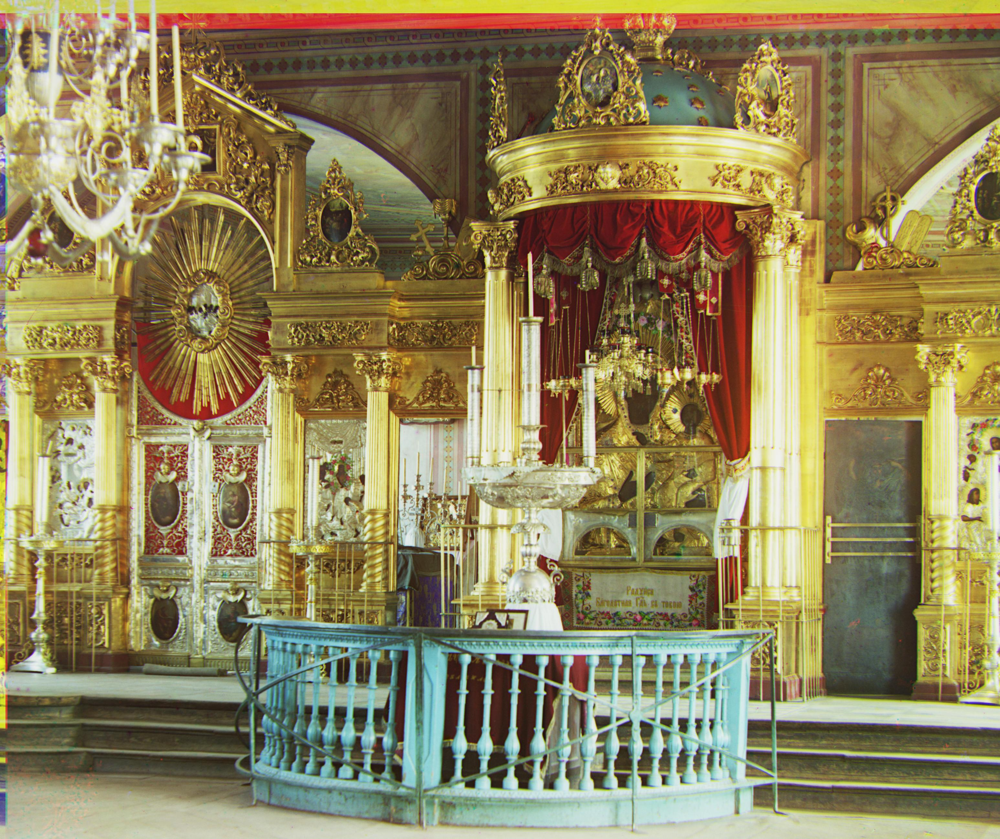
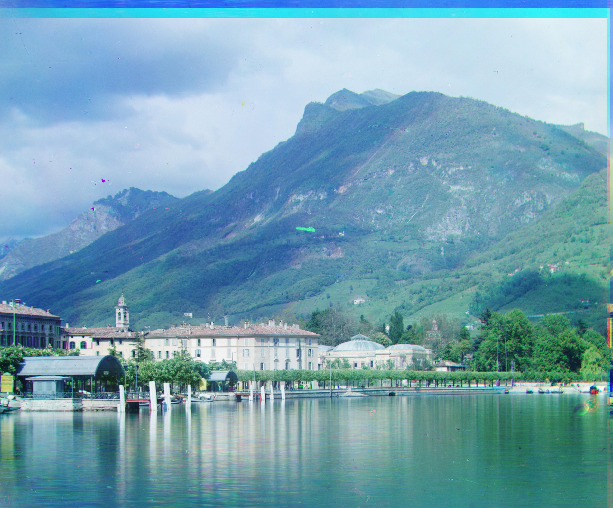
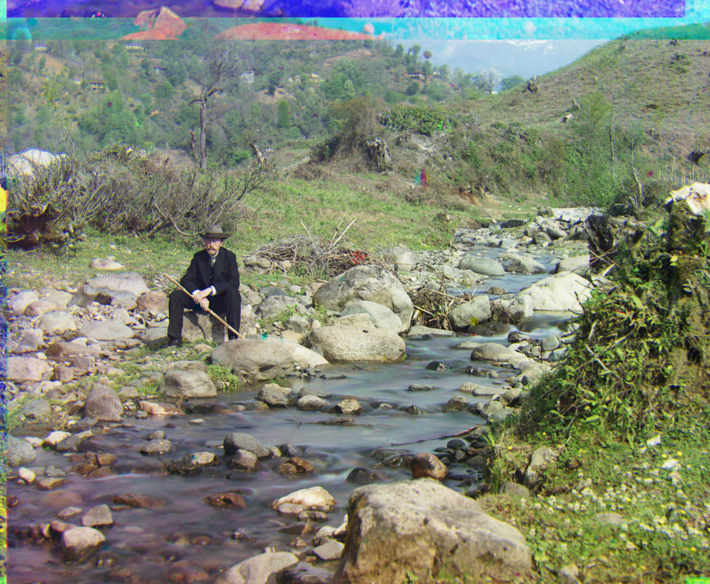
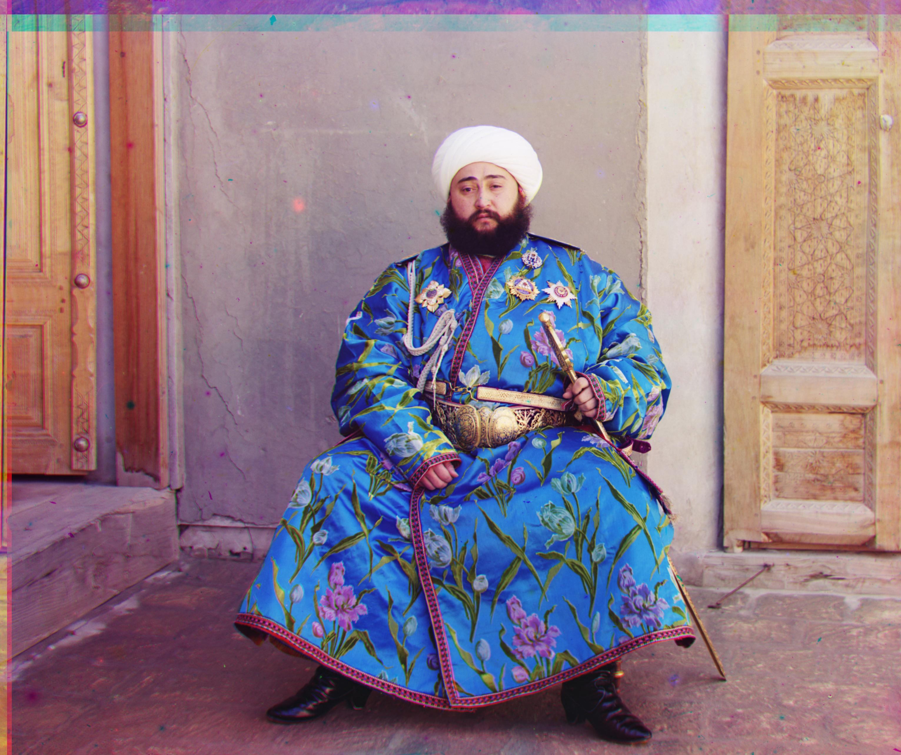

Project 1: Images of the Russian Empire
Colorizing the Prokudin-Gorskii Photo Collection
Project Overview
This project implements automatic colorization of the Prokudin-Gorskii photo collection by aligning the three color channel plates (red, green, blue) that were captured separately. The collection, created by Sergei Mikhailovich Prokudin-Gorskii in the early 1900s, represents one of the earliest experiments in color photography.
The project is divided into three main parts: single-scale alignment for smaller images using exhaustive search, multi-scale pyramid alignment for larger, high-resolution images, and bells and whistles using edge detection for channel alignment.
Part 1: Single-scale Alignments
This part focuses on aligning the color channels of the images at a single scale using both the NCC (Normalized Cross-Correlation: calculated by dot producting the normalized channels, which is essentially the 2-D array divided by its Frobenius norm). As the image size is small, we can use exhaustive search methods to find the best alignment. This includes a nested for loop that iterates over the possible shifts for each channel, finding the combination that gives that highest NCC. The search range is set to ±15 pixels in this part.
NOTE: It is extremely important to crop the images before alignment to remove any borders or artifacts that may affect the alignment process. Not removing these will result in terrible misalignments. About 6.7% cropping is done on each side of all the channels for this part.
The offset are listed as the captions for the images. For example, G(1, 2) corresponds to the green channel shifted by 1 pixel in the x direction and 2 pixels in the y direction.

Cathedral - Unaligned

Monastery - Unaligned

Tobolsk - Unaligned

Cathedral - NCC G(2, 5) R(3, 12)

Monastery - NCC G(2, -3) R(2, 3)

Tobolsk - NCC G(3, 3) R(3, 6)
Part 2: Image Pyramid: Speeding up Alignment for Large Images
This part introduces the concept of an image pyramid to speed up the alignment process for larger images. By creating a multi-scale representation of the images, we can perform alignment at a coarse scale and then refine it at finer scales. This approach significantly reduces the computational cost while maintaining alignment accuracy.
To be more specific, the image is first downsampled by a factor of 2 (with sk.transform.rescale) to create a lower-resolution version, repeatedly applying downsampling until the size is manageable for a exhaustive search. A search in the lower-resolution space gives us a coarse shift for alignment, which allows us to initialize the finer alignment at a better position. A finer search is then done starting at the coarsely shifted channels. Therefore, the total shift in this step will be coarse_shift * downsample_factor + fine_shift. This final calculated shift will serve as the coarse shift for the next level of the pyramid. The implementation of the method is done by a simple recursion, where the function first downsamples the channels, recurses and get the coarse shift with one fewer level, shifts the channels according to the coarse shift, searches for the fine shift, and finally returns the calculated shift based on both coarse and fine offsets. The base case is when the passed in num_levels is 1, where a single-scale search is then done to find the shift at the most coarse level.
The following images are the results of applying the image pyramid approach to the alignment task on the .tif files, which is much larger than the images in the previous part. The search range is ±5 pixels with 6 levels of factor-of-2-downsampling. NCC is used for metric. About 10% cropping is done on each side for this part. For the smaller .jpg images, the multi-scale search is still applied to demonstrate the effectiveness of the approach and fulfill the requirements of the project. All the .jpg images are processed with a 3-level pyramid of factor 2 downsampling, the search range being ±5 pixels.
Cathedral - Unaligned
Cathedral - NCC G(2, 5) R(3, 12)
Monastery - Unaligned
Monastery - NCC G(2, -3) R(2, 3)
Tobolsk - Unaligned
Tobolsk - NCC G(3, 3) R(3, 6)

Church - Unaligned
Church - Pyramid NCC G(4, 25) R(-4, 58)

Emir - Unaligned
Emir - Pyramid NCC G(24, 49) R(101, -283)

Harvesters - Unaligned

Harvesters - Pyramid NCC G(16, 59) R(13, 124)

Icon - Unaligned

Icon - Pyramid NCC G(17, 41) R(23, 89)

Italil - Unaligned
Italil - Pyramid NCC G(21, 38) R(35, 76)

Lastochikino - Unaligned
Lastochikino - Pyramid NCC G(-2, -2) R(-8, 75)

Lugano - Unaligned

Lugano - Pyramid NCC G(-16, 41) R(-29, 92)

Melons - Unaligned
Melons - Pyramid NCC G(10,81) R(13, 178)

Self Portrait - Unaligned

Self Portrait - Pyramid NCC G(29, 78) R(37, 176)
Siren - Pyramid NCC G(-6, 49) R(-25, 95)

Three Generations - Unaligned
Three Generations - Pyramid NCC G(14, 53) R(11, 112)
Part 3: Bells and Whistles
Notice that the emir image is not aligned perfectly. This is because the brightness of the different channels are significantly different. To address this, we can use edge detection to find the edges of the images and then use the edges to align the images. Sobel edge detector is used in this part.
In addition, auto-cropping is also applied as the sides of the images are leading to some artifacts in the aligned images. All input images are cropped 10% from the sides to remove the artifacts.
Edges of Emir - Pyramid NCC using edge detection

Emir - Pyramid NCC using edge detection G(24, 49) R(40, 107)